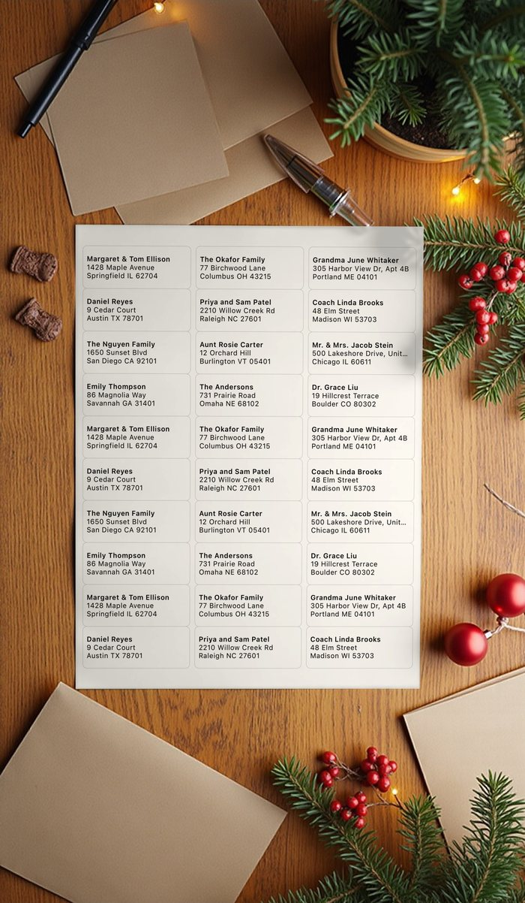

Printing Christmas card address labels at home
Keep one address list, tick who is getting a card this year, and print onto the label sheets you have, after checking one plain-paper page against the sheet. Return-address labels are a second, smaller job on their own sheet.

A routine that works year after year
- Start from last year's list. In Labelfit, open Addresses, tap List and duplicate last year's. Add new people with Add from Contacts or Type an address, and correct anyone who has moved.
- Tick who gets a card. Untick people you're skipping this year rather than deleting them.
- Choose the sheet by the number on the pack under Label sheet. For cards going abroad, turn on Print country.
- Check one page on plain paper against the label sheet. If it's off, use Line up with your printer once.
- Print. Labelfit fills sheet after sheet; on a sheet left over from last year, start at the first empty label.
- Return-address labels: choose a small-label sheet such as 5167 (80 per sheet), set Fill sheet with to your own address, and print one sheet.
Practical points
- Buy labels made for your printer: inkjet labels can smear or come loose in a laser printer.
- Feed one sheet at a time if your printer tends to pick up two.
- For a list kept in a spreadsheet, copy the rows with a header (Name, Street, City, State, ZIP) and use Paste addresses.
- Lists stay on your device, so next December starts from this year's list.
Without the app
A Mac's Contacts app prints mailing labels from a contact list (File > Print, Mailing Labels), and a word processor's mail merge handles a spreadsheet. Handwriting is still fine for twenty cards; labels start to pay off somewhere past that.
Labelfit on the App Store: your first two prints are free, the first sheet each time, with no watermark.